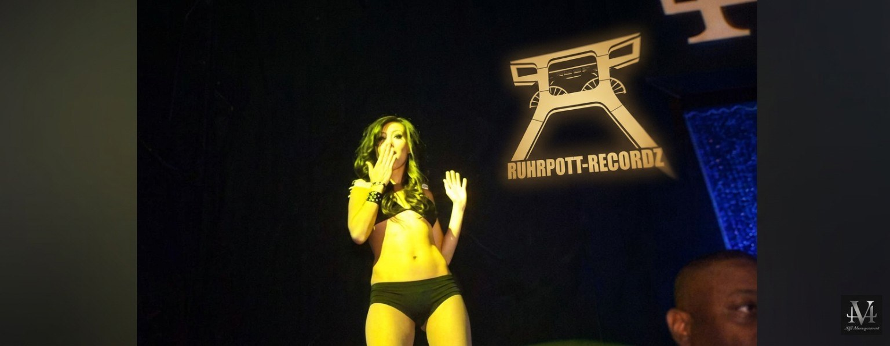
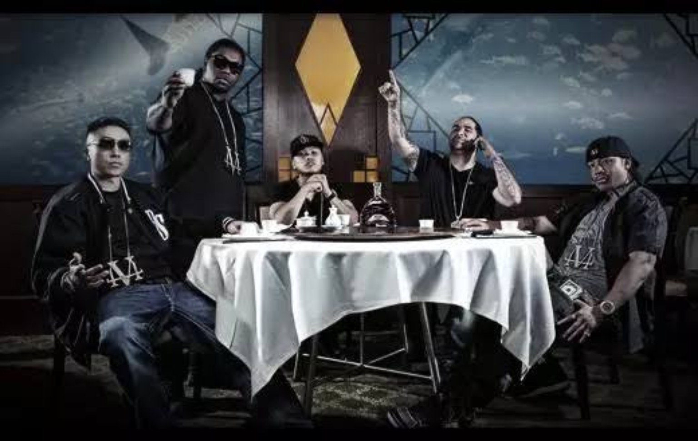

Ruhrgebiet × West Coast
From Germany
to the Bay
Zwischen Fördertürmen, Asphalt und kalifornischer Skyline. Eine visuelle Reise mit Ruhrpott-DNA und West-Coast-Flair.
Projekt ansehen ↘Eigener Sound. Eigene Bilder. Echte Wurzeln. Ruhrpott-Recordz verbindet die rohe Energie des Reviers mit einer klaren visuellen Handschrift.
Keine gewöhnliche Cover-Sammlung: ausgewählte Projekte bekommen Raum, Atmosphäre und eine eigene Bühne.
Zwischen Fördertürmen, Asphalt und kalifornischer Skyline. Eine visuelle Reise mit Ruhrpott-DNA und West-Coast-Flair.
Projekt ansehen ↘
Dunkle Nacht, nasser Asphalt und kompromisslose Attitüde. Ein Bild, das die Stimmung des Projekts trägt.
Zu den Videos ↘
Schwarzweiß, klare Linien und ein ikonischer GT-R. Reduzierte Bildsprache mit Charakter.
Mehr aus der Welt von Ruhrpott ↘Die YouTube-Videos sind direkt eingebettet. Starte die Wiedergabe, ohne die Website verlassen zu müssen.
Lokale MP4-Clips müssen zusammen mit der Website im Ordner assets/videos veröffentlicht werden.
Einblicke in Regie, Aufnahmeraum und die Momente zwischen Aufnahme und fertigem Track. Das Studio ist Teil der Geschichte – nicht nur Kulisse.
In Verbindung bleiben ↘
Die Regie: ein Ort für Ideen, Takes und den Feinschliff. Licht, Technik und Atmosphäre gehören zum Prozess.
Abgeschirmt vom Rest der Welt. Fokus auf Stimme, Ausdruck und den richtigen Moment.



Neue Videos, Produktionen und Studio-Einblicke. Folge Ruhrpott-Recordz auf den offiziellen Plattformen.